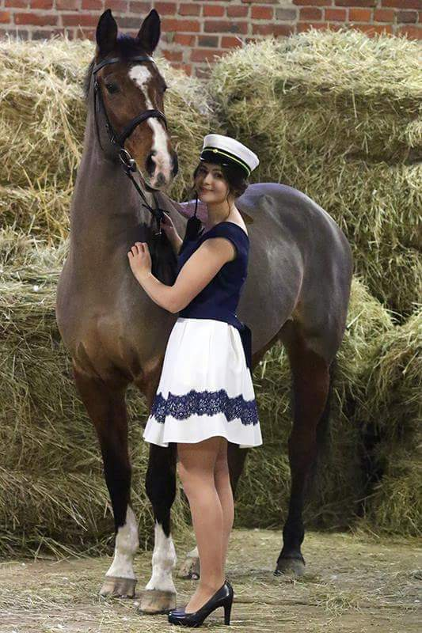

Etusivu
Etsitkö ammattitaitoista ja kannustavaa valmentajaa/ratsuttajaa harrastamisen tueksi?
Tai kenties sisäänratsastajaa nuorelle hevoselle?
Tulit oikeaan paikkaan!

Etsitkö ammattitaitoista ja kannustavaa valmentajaa/ratsuttajaa harrastamisen tueksi?
Tai kenties sisäänratsastajaa nuorelle hevoselle?
Tulit oikeaan paikkaan!

Olen Ida, vuonna 2017 ratsuhevosten peruskouluttajaksi
valmistunut ja estehevosiin painottuva ratsastaja.
Ennen yrittäjyyttä olen kerryttänyt työkokemustani sekä Suomessa että ulkomailla,
työskennellen groomina, ratsuttajana sekä tallityöntekijänä.
Pidän Turun seudulla ratsastustunteja niin sileällä kuin esteilläkin,
painottaen istuntalähtöistä työskentelyä ja edeten ratsukon ehdoilla.
Ratsutuksessa tarjoan palveluita sisäänratsastuksesta kilpailuttamiseen.

Käytössä laadukas Listerin klipperi. Hiljainen ja kuumumaton kone sopii myös aremmille hevosille.
Tuotteet tulee tähän jee
Tässä tuotteita jee
vielä vähän tuotteita juu
Yksityistunti, kesto n.40 min 30€ sis. Alv 24%
Ryhmätuntien hinnoittelu sovitaan erikseen osallistujien määrään perustuen.
Ratsutus 30€ sis. Alv 24%
Lähtökohtaisesti ratsutukset valmiiksi varustetulla hevosella, mutta mahdollista ostaa myös kuntoonlaitto ja muu hevosenhoito!
Tallitöiden hinta sovitaan erikseen.
Ida Suontama
050 3625242
Kohmontie, 20540 Turku